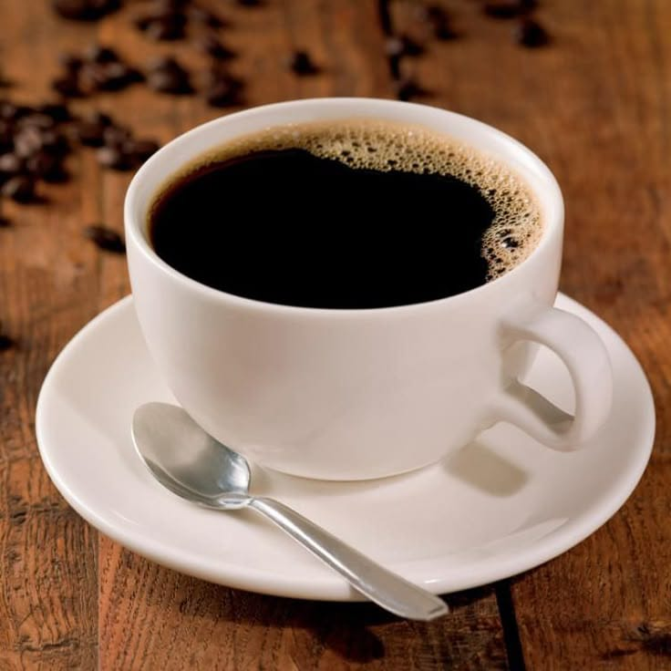

Menu Terfavorit

Latte
Best SellerPerpaduan espresso ganda dengan susu murni yang di-steam lembut, menciptakan rasa manis alami.

Macchiato
Double shot espresso murni premium yang "ditandai" dengan sesendok foam susu lembut di atasnya untuk menjinakkan keasaman kopi tanpa menghilangkan kepekatan rasanya.

Americano
Cara minum kopi hitam yang bersih dan ringan. Espresso premium yang diencerkan dengan air panas dalam rasio tepat, menghasilkan aroma kaya yang nyaman dinikmati santai.